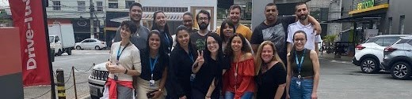

20 de Outubro de 2022
Fim de ciclo no GPA

Em Outubro de 2022 saí da empresa com grandes aprendizados. Além de
ter sido minha primeira oportunidade de emprego foi um ambiente onde
criei muitas amizades e pude aprender sobre as relações profissionais,
relações com clientes, relações com fornecedores, criação de
relatórios, avaliações de custo, avaliações de serviço, entre outros.
Obrigada GPA!